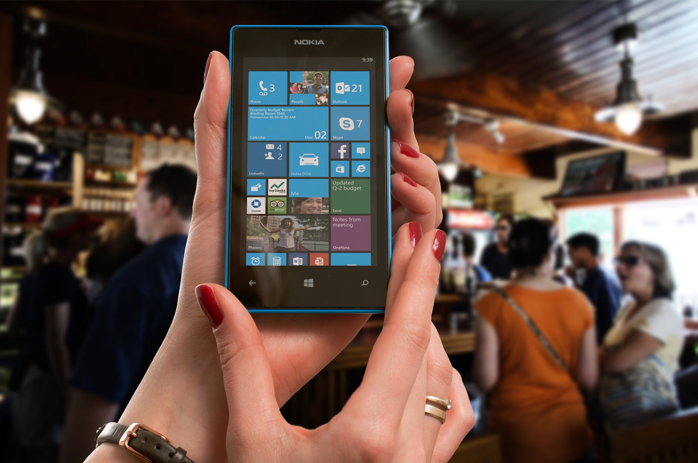
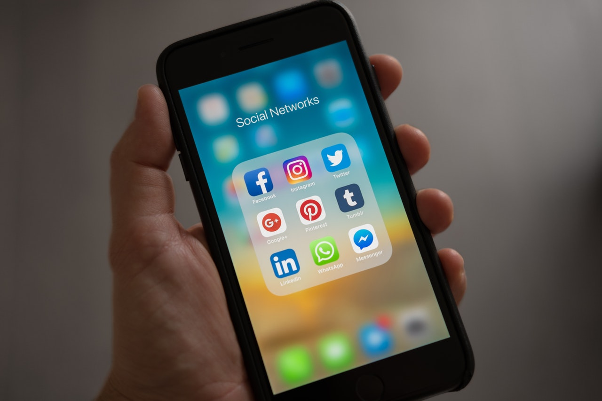

Himpunan Mahasiswa Vokasi (HIMAVO) Micro IT adalah perhimpunan mahasiswa dari Program Keahlian Teknik Komputer, Manajemen Informatika, dan Komunikasi.
Halo-halo teman-teman semuanya! Akhirnya liburan telah usai, saatnya kita untuk persiapan untuk memulai... Lanjutkan Baca
Indonesia kini punya senjata baru untuk turut bertarung di pasar layanan pesan instan. Namanya adalah Indonesia Mesengger atau disingkat Imes...Lanjutkan Baca
Ditulis oleh Ikhsan P, tanggal 20 Maret 2017
Aplikasi versi ringan atau yang biasa disebut dengan tambajan “Lite” saat ini nampaknya masih menjadi favorit bagi sebagian pengguna, mengingat pengguna perangkat segmen entry-level masih banyak yang mengandalkan aplikasi versi ringan tersebut...Lanjutkan Baca
Ditulis oleh Fakhran, tanggal 2 Maret 2017
Indonesia kini punya senjata baru untuk turut bertarung di pasar layanan pesan instan. Namanya adalah Indonesia Mesengger atau disingkat Imes. Sebagai pendatang baru di jagad layanan pesan instan, Imes pun menghadirkan jurus khusus untuk memikat pengguna...Lanjutkan Baca
Ditulis oleh M. Fakhran Hadyan, tanggal 20 Maret 2017
Bagi pengguna Windows 10, hal seperti Windows Update (saat melakukan reboot untuk install update) tidaklah terlalu bermasalah karena sudah ada fitur Active Hours yang membuat kamu bisa mengatur update sesuai dengan waktu yang kamu inginkan.Lanjutkan Baca